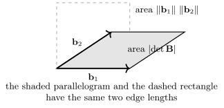

Determinant Inequalities for Positive Matrices
Section 6 cut a Hermitian matrix into blocks and read a verdict off the corner: once the corner block is positive definite, the whole matrix is positive definite exactly when one smaller matrix, the Schur complement, is. The same cut carries a second piece of information, which that verdict threw away. The congruence behind it is a factorization, so it computes a determinant as well, and what the off-diagonal block does to that determinant goes one way only: it can push the determinant down, and never up.
That single observation, applied to a two-block partition, is Fischer’s inequality: the determinant of a positive matrix is at most the product of the determinants of its two diagonal blocks. Applied again and again, until every block is a single entry, it is Hadamard’s inequality: the determinant is at most the product of the diagonal entries. The second has a picture attached, and it is the reason the inequality is remembered — among all parallelepipeds with prescribed edge lengths, the rectangular one has the largest volume.
Throughout,
with
13.7.1 Fischer’s inequality
When
If the Schur complement could be compared with
So what is needed is that adding a positive semidefinite matrix never decreases a determinant. That is the next lemma, and it is where the square root of Section 2 earns its keep.
Let
with equality if and only if
Idea. Whiten: divide the problem by
Proof. By Theorem 13.2.1 the
matrix
Put
Now
each factor being
For the equality case, the product equals
Remark. Section 5 states this in
its natural generality: the determinant is monotone for
the Loewner order, so
Let
If
Idea. Do the definite case first
and reach the general case by a limit. For
Proof. Case 1:
The matrix
with equality if and only if
It remains to see that
Case 2:
for every
The inequality says that for a positive matrix the
off-diagonal blocks are a liability: they can only
shrink the determinant, and they cost nothing only when
they are absent. Applying it repeatedly, to finer and
finer partitions, gives the classical case in which
every block is
Quick check. What does Corollary 13.7.2 say
for
Solution. It says
13.7.2 Hadamard’s inequality
- (a) Let
- (b) Let
Idea. Part (a) is Fischer’s
inequality with
Proof.
- (a) Induct on
Let
so that
the second step being the inductive hypothesis applied to
For equality, suppose first that some
- (b) Put
Part (a) now reads
For equality, note that
Remark. Part (b) has a geometric
reading, and it is the reason the inequality is
remembered. Over

Bound
and compare each bound with the exact value.
Solution. For
For
Warning. Part (a) needs positivity; without it the inequality can fail in either direction. The symmetric matrix
has
13.7.3 Exercises
A. Check your understanding
- (a) State Corollary 13.7.2, including its hypothesis, and say when equality holds.
- (b) State both forms of Theorem 13.7.3, and say what hypothesis each one needs.
- (c) In the proof of
Fischer’s inequality, which matrix plays the role of
- (d) True or false:
if
- (e) Theorem 13.7.3 (b)
holds for every square
Solution.
(a) For
(b) For
(c)
(d) False. Equality also holds whenever some
(e) Into the Gram matrix. Part (b) is part (a) applied to
B. Practice
Let
- (a) Using the
partition with
- (b) Hence compute
Solution.
- (a) Here
The leading principal minors of
- (b) By Theorem 8.3.2,
- (a) Bound
- (b) Let
Solution.
(a) The columns are
(b) Every column of
C. Going deeper
- (a) Let
- (b) Show that the
bound is attained for
- (c) Let
Hint for (c): normalize the first row and the first column, then subtract the first column from the other two.
Solution.
(a) Each column
(b) For
(c) Multiplying a row or a column by
with every